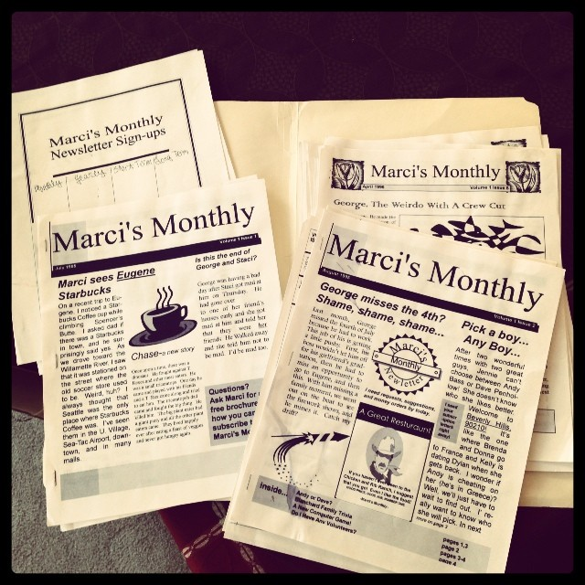
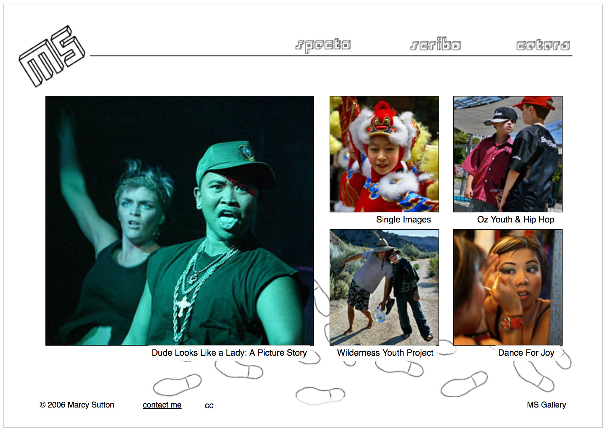
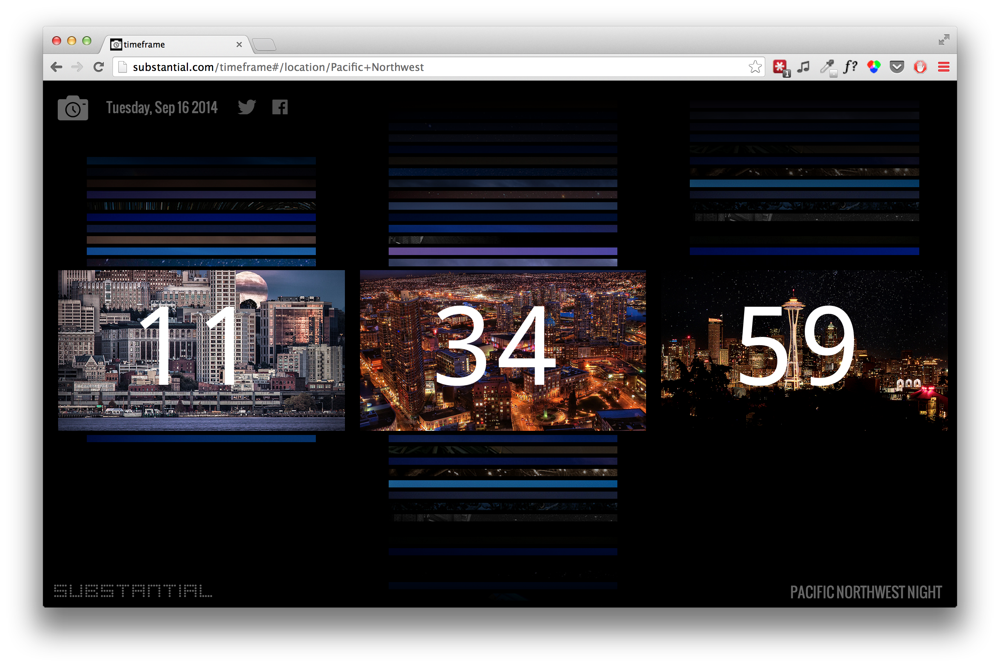
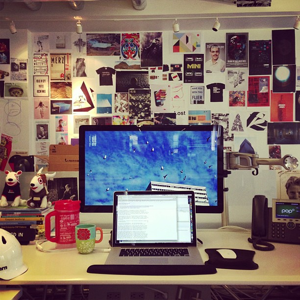
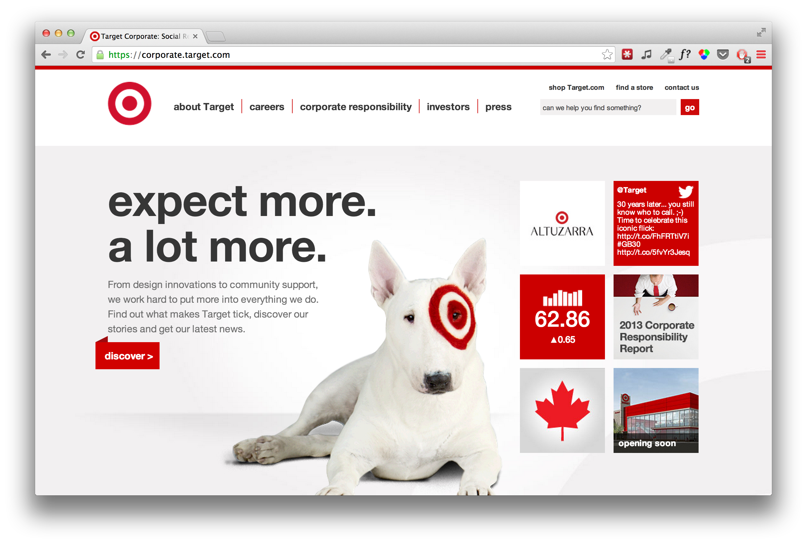

How Did I Get Here?
Life as an Accessibility Engineer
By Marcy Sutton
I started out just like you!
Photography School
Web Design School

Timeframe
POP Agency Life
Target Corporate Website
-

Web Accessibility
The inclusive practice of removing barriers that prevent interaction with websites by people with disabilities.
People with Disabilities?
- Blind, low-vision, colorblind
- Deaf, hard-of-hearing
- Motor-impaired, physical
- Cognitive, autism, learning